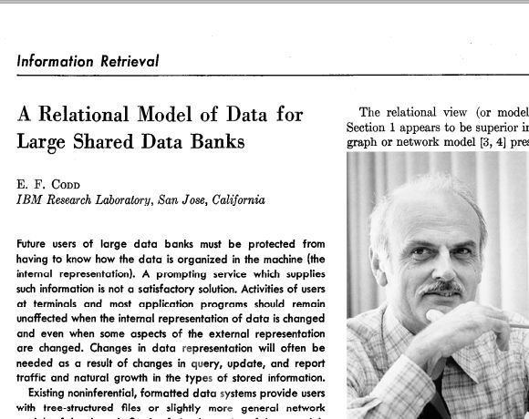
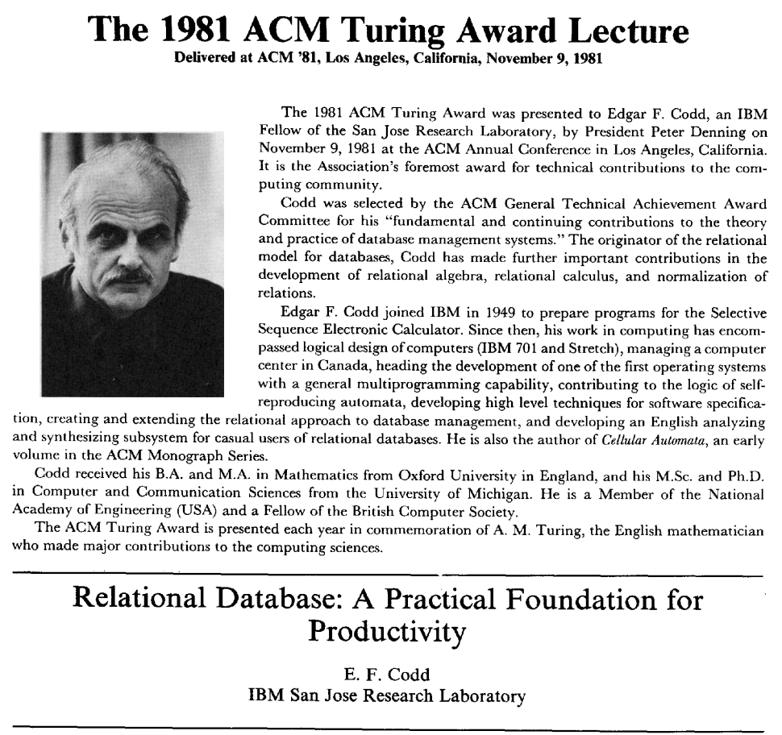
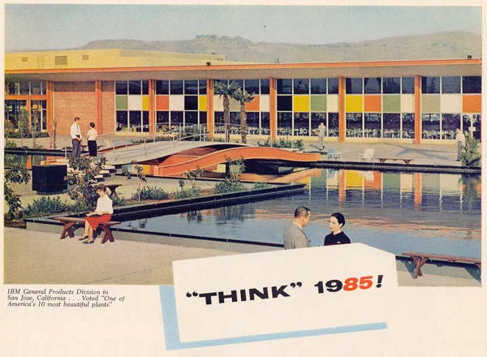
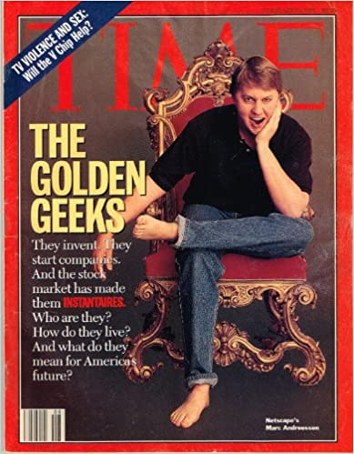

Relational Databases
Principles, Theory, History
Principles
Data Independence
"Activities of users at terminals and most application programs should remain unaffected when the internal representation of data is changed and even when some aspects of the external representation are changed." – E.F. Codd 1970
Information Principle
All information is represented by the same model.
Consistency
Data consistency is enforced not by imperative application rules but by declarative database constraints.
Theory
Relational Model
- relation
- (heading, body)
- heading
- {attributes}
- body
- {tuple}
- attribute
- (name, domain)
- name
- text
- domain
- text
- tuple
- {value} where value ∈ domain
- predicate
- {proposition}
- proposition
true|false
Interrogating the Model
- relational calculus
- declarative language for performing optimizations
- relational algebra
- imperative language for performing transformations
Application
- relation
- table | view | query
- attribute
- column
- tuple
- row
- domain
- type
- proposition
- query
- relational algebra
- Π σ ⨝
- projection Π
- choose columns
- selection σ
- choose rows
- join ⨝
- product of relations
Normalization
- UNF: anything goes
- 1NF: atomic columns
- 2NF: no functional dependencies within table
- 3NF: no functional dependencies to other tables
- 4NF, 5NF, 6NF: refinements but don't worry
Demo
Reality
Climbing Down the Ivory Tower
The mathematical formalism is useful for reasoning, but all database implementations deviate from the strict mathematical model for practical purposes.
Real Databases
- depart from set theory (hello duplicates)
- depart from simple relational theory (hello
GROUP BYANDORDER BY) - depart from first-order predicate logic (hello
NULL) - extend the basic model (hello
OUTER JOIN)
Tables
- not much to say, except
- there are only "relations"
- parent-child, one-to-many, many-to-many are not a thing
Views
- not much to say, except
- they're saved queries
- not an performance barrier, except
- when they do too much
Keys
- primary
- simple
- composite
- "pseudo-keys"
sequences
Constraints
- Foreign
- Check
- Not-Null
- Unique
- Exclusion
Indexes
- Clustered (not really a thing in Postgres)
- Non-Clustered
- Implementation for constraints
- Expression Indexes
- Partial Indexes
- Covering Indexes
Data Dictionary
- One of the hallmarks of a RDBMS
Transactions
- ACID: Atomic, Consistent, Isolated, Durable
- A: all or nothing
- C: satisfies constraints
- I: visible or not
- D: true committment
Concurrency
Implementation Details
- Files or Volumes
- Pages
- Extents
- Rows
- Values
- Read performance
- Write performance
- Page splitting
Summary
Key Ideas
- Mathematical Foundation
- Deductive Reasoning
- Powerful Optimizations
- Sophisticated Code Generation
The End
Additional Slides
History
1970: E.F. "Ted" Codd


1971: Generation X

- 1965-1980
- Latchkey kids
- Tech-savvy

1976: IBM System R
- First relational database
- Released academic papers…
- …but no commercial product

1976: INGRES

- Based off those papers
- Berkeley research project
- Later a commercial product
1977: Oracle
- PDP-11 UNIX
- Influence directly from Codd's 1970 paper

1977: Apple

- Apple II
- BASIC
- 6M units sold worldwide
- Sales peaked in 1983
- No RDBMS :(
1978: Space Invaders

1982: Commodore

- VIC-20
- Commodore 64
- BASIC
- 17M units sold worldwide
- Sales peaked in 1984
- No RDBMS :(
1984: Sybase
- More Berkeley academics
1989: Microsoft SQL Server
- Licensed from Sybase for IBM OS/2
- Used to grind Sybase into the ground

1990: The World Wide Web

- Tim Berners-Lee at CERN
- First web server and graphical browser
1993: Mosaic

1994: The Year of the Web
- Gen-Xers were 23 years old
- were about to have too much money
- and not enough shoes

1995: The Dot-com Bubble

- HTML
- MySQL
- Perl is used
- But Java appears
1996: MySQL
- MyISAM had severe limitations
- Fast but no transactions
- No relational integrity
- No triggers
- No functions
2000: The NASDAQ Peaks
- the party's over
- From dog treats to the banks
- ORMs, EJBs, oh my!
2004: Object-Relational Mapping is the Vietnam of our industry
- Ted Neward, architect and prolific author
- Gen-Xers were 33
2004: The MapReduce Paper
- Apache Hadoop released 2006
2005: CouchDB
- No SQL
2005: GreenPlum
- SQL?
- MPP
2007: MongoDB
- No SQL!
2007: The Dynamo Paper
- No SQL!!
2010: Moore's Law Ends
- Gordon Web, Intel co-founder
2010: Apache Hive
- SQL on Hadoop
2010: CitusDB
- SQL
- MPP
2013: AWS Redshift
- SQL!
- MPP
2014: Apache Spark
- Comes with SQL (more-or-less)
2017: Hasura
2022: Today
- Gen-Xers are in their fifties.
- No longer calling the shots on tech
- Finally!
Why Don't We Build Applications in the Database?
It's not what they tell you
performancenot a real programming languagenot object-oriented
It's never what they tell you